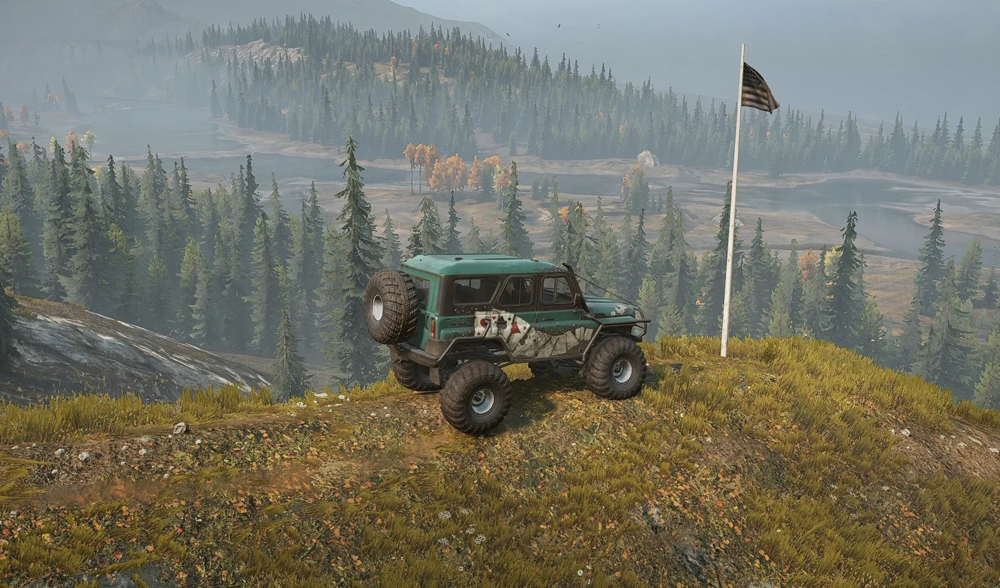
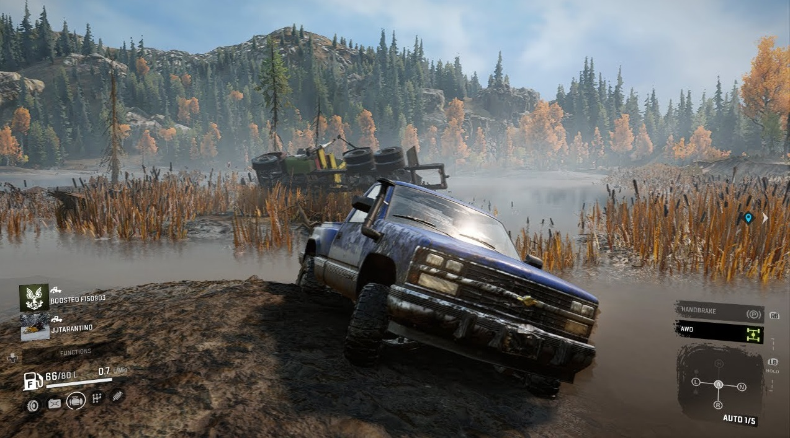
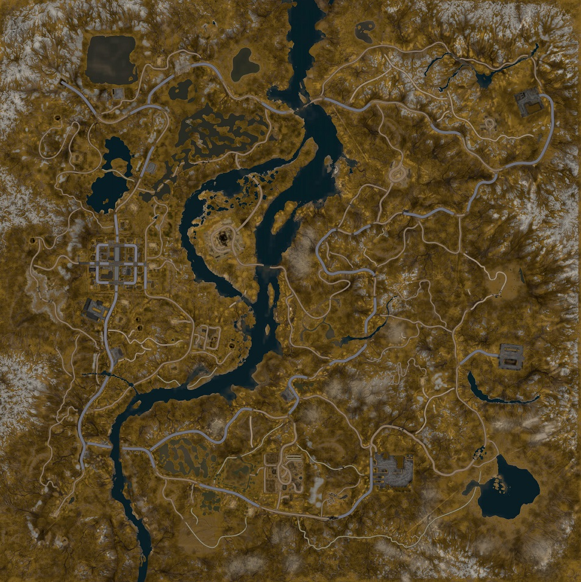
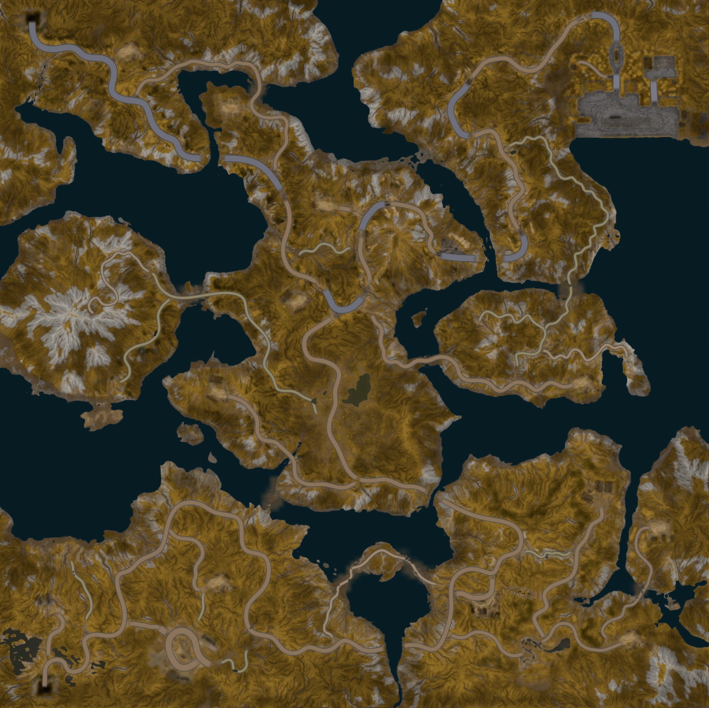
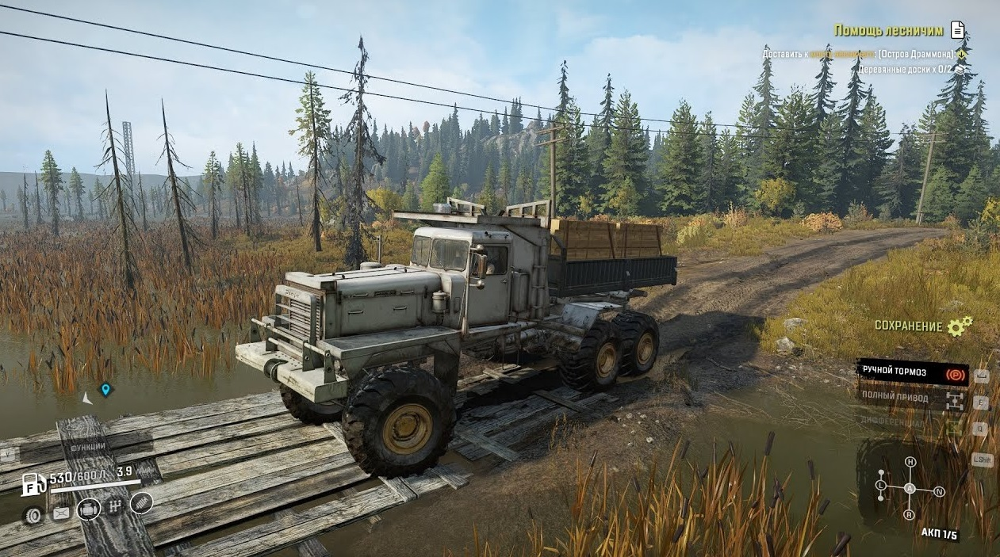
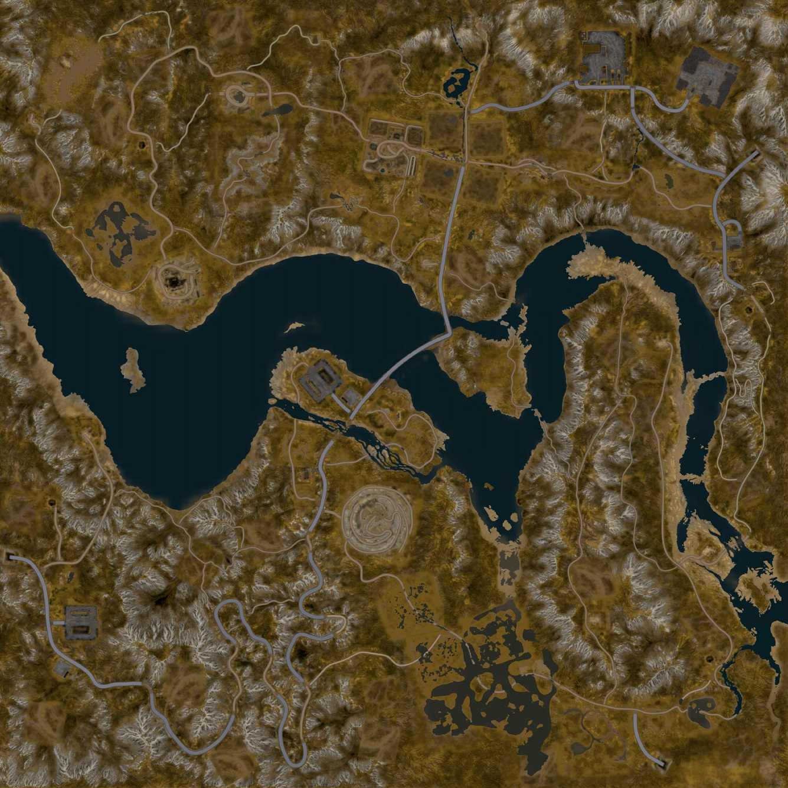

Карты
Блэк-Ривер
Мичигану в США не привыкать к плохим погодным условиям. Здесь вы увидите все, что угодно: от холодных ветров, дующих с Великих озер, или зимы, слишком холодной, чтобы ездить на грузовике по льду на рыбалку, до проливных дождей и беснующихся наводнений, разрушающих инфраструктуру и выгоняющих людей из их же домов.
На этот раз ливни были особенно сильны для одной из локаций Мичигана, угрожая всему штату. И именно здесь вам предстоит кататься значительную часть времени в игре. Вы все верно понимаете, здесь вам нужно готовиться ко всему: и к снегу, и к грязи, и к болотам и даже к нормальным дорогам.
 Остров Дарморд
И снова добро пожаловать в безвылазную грязищу. Конкретно здесь – очень много воды. Ее катастрофически много! Вы только посмотрите на это:
Это же сплошные острова! Соответственно, развилок тут немного, и очень часто вам придется делать большие круги и как следует петлять, разливая топливо «практически ни на что», просто чтобы добраться до соседнего острова.
Как вы видите, острова также соединены между собой «дорогой», которую и дорогой-то можно назвать с большой натяжкой. Да, иногда это более-менее проходимые места с дорогой, но обратите внимание на «разрывы».
Иногда, чтобы не делать крюк, вам придется ездить именно через них. А уж там вам без лебедки никак нельзя, и без подходящих для грязи шин. Также подготовьте полный привод и мощный движок. Здесь вы будете знатно застревать.
Смитловская дамба
Вот здесь вам будет немного попроще, чем на островах Драммонда. Но не обольщайтесь слишком сильно. Здесь действительно есть хорошие дороги, и даже более-менее хорошие, но также здесь есть огромное множество возвышенностей и «серпантина».